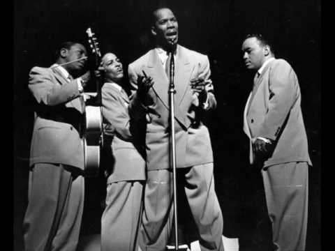
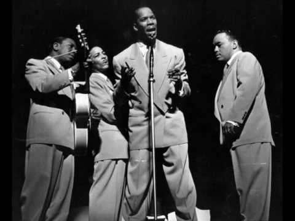

The Ink Spots
Easy on the Ears
The Ink Spots were an American pop vocal group who gained international fame in the 1930s and 1940s. Their unique musical style led to the rhythm and blues and rock and roll musical genres, and the subgenre doo-wop. The Ink Spots were widely accepted in both the white and black communities, largely due to the ballad style introduced to the group by lead singer Bill Kenny.
In 1989, the Ink Spots (Bill Kenny, Deek Watson, Charlie Fuqua and Hoppy Jones) were inducted into the Rock and Roll Hall of Fame, and in 1999 they were inducted into the Vocal Group Hall of Fame. Since the Ink Spots disbanded in 1954, there have been well over 100 vocal groups calling themselves "The Ink Spots" without any right to the name, and without any original members of the group. These groups often have claimed to be "2nd generation" or "3rd generation" Ink Spots.